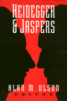

Essays explore the relationship between two modern German philosophers
Essays explore the relationship between two modern German philosophers


 Essays explore the relationship between two modern German philosophers
Essays explore the relationship between two modern German philosophers

|  |
Heidegger and Jaspersedited by Alan M. Olsonpaper EAN: 978-1-56639-115-3 (ISBN: 1-56639-115-6) |
The friendship between Martin Heidegger and Karl Jaspers developed after World War I but became strained over the intrusion of Nazism into intellectual life. These essays provide insight into the cultural, religious, and political crises facing the two philosophers and elucidate the perennial question about the moral responsibility of intellectuals. Of particular interest is an essay by Paul Tillich, published here for the first time.
Excerpt available at www.temple.edu/tempress
Acknowledgments
Introduction: A Dialectic of Being and Value – Alan M. Olson
1. Heidegger and Jaspers – Paul Tillich
2. Heidegger's Philosophy of Being from the Perspective of His Rectorate – Leonard H. Ehrlich
3. Shame, Guilt, Responsibility – Karsten Harries
4. The Psychological Dimension in Jasper's Relationship with Heidegger – Harold H. Oliver
5. On the Responsibility of Intellectuals – Joseph Margolis
6. Jaspers and Heidegger: Philosophy and Politics – Tom Rockmore
7. Heidegger and Jaspers on Plato's Idea of the Good – Klaus Brinkmann
8. The Space of Transcendence in Jaspers and Heidegger – Stephen A. Erickson
9. The Concept of Freedom in Jaspers and Heidegger – Krystyna Gorniak-Kocikowska
10. Heidegger's Debt to Jaspers's Concept of the Limit-Situation – William D. Blattner
Recent Publications on Heidegger
About the Contributors
Index
Alan M. Olson is Professor of Religion and Associate Professor of Philosophy at Boston University.
Contributors: William D. Blattner, Klaus Brinkmann, Leonard H. Ehrlich, Stephen A. Erickson, Krystyna Gorniak-Kocikowska, Karsten Harries, Joshph Margolis, Harold H. Oliver, Tom Rockmore, Paul Tillich, and the editor.
© 2015 Temple University. All Rights Reserved. This page: http://www.temple.edu/tempress/titles/1019_reg.html.